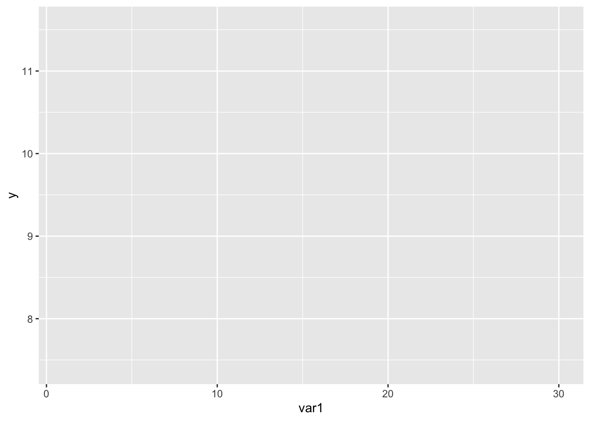
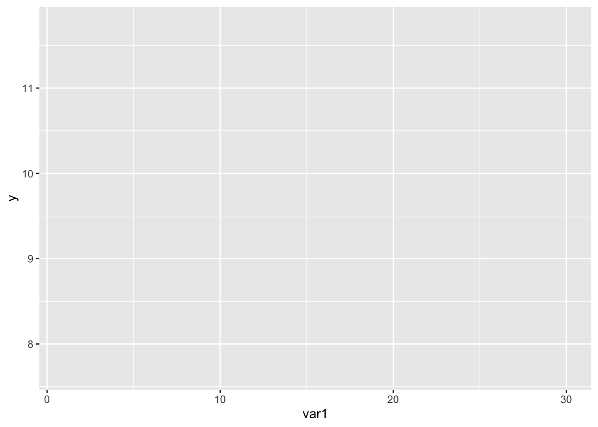
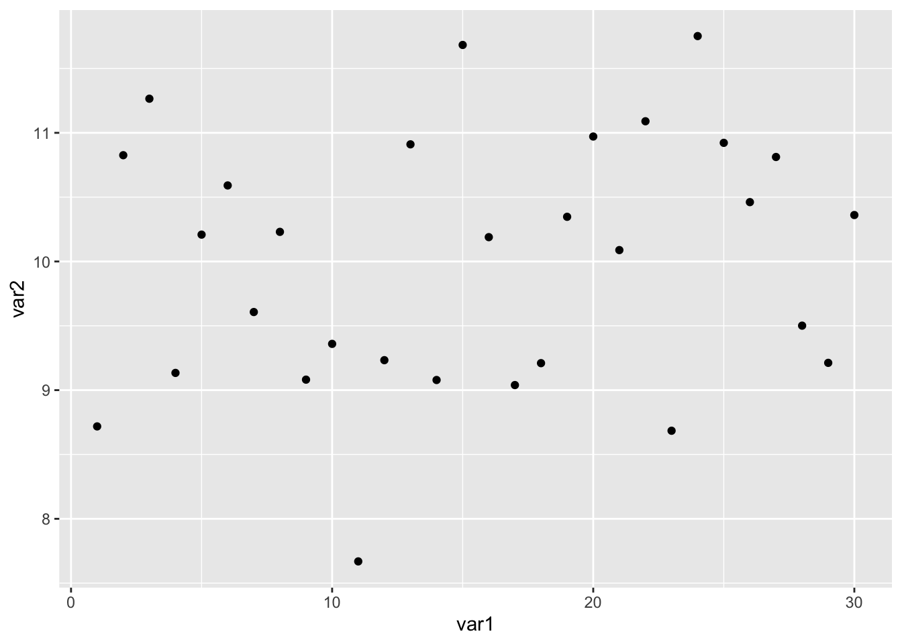
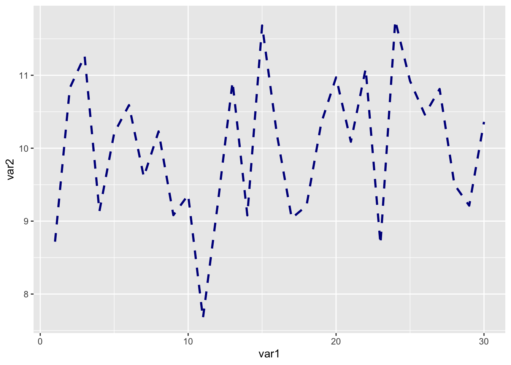
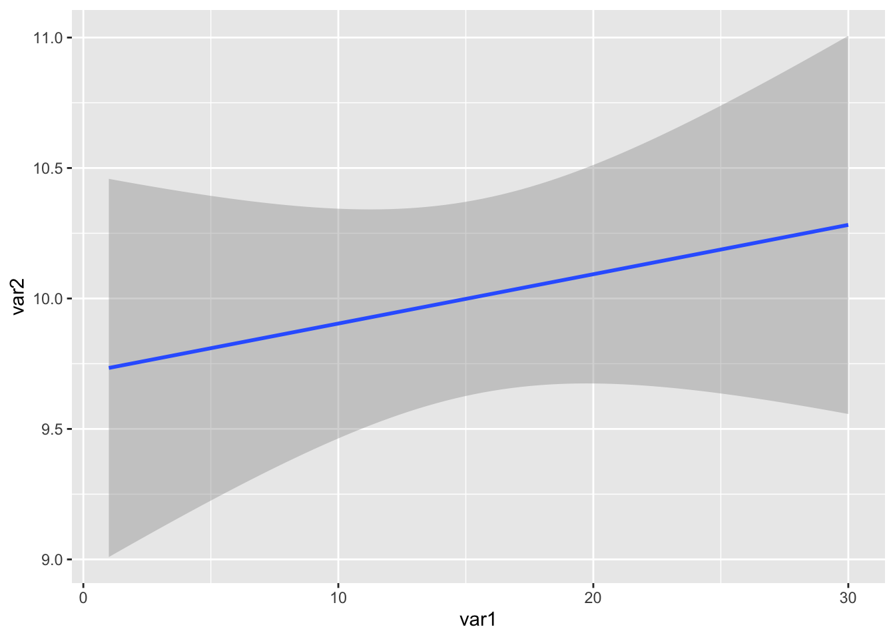
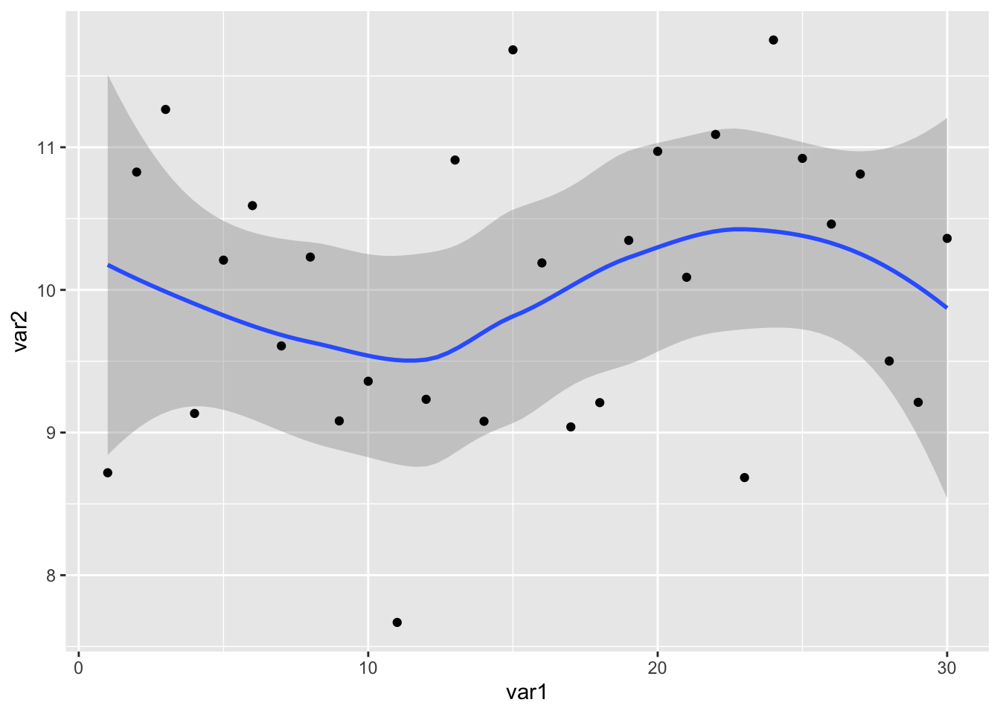
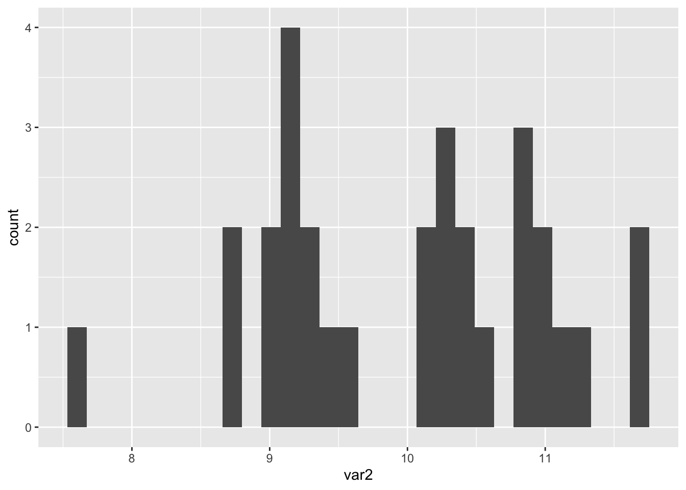
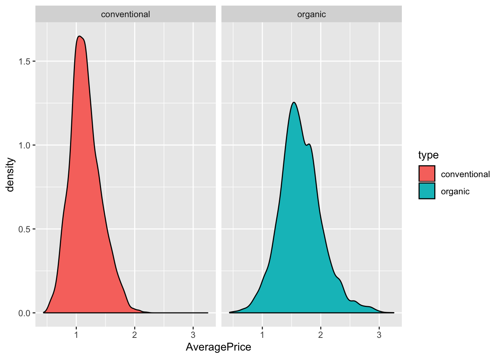
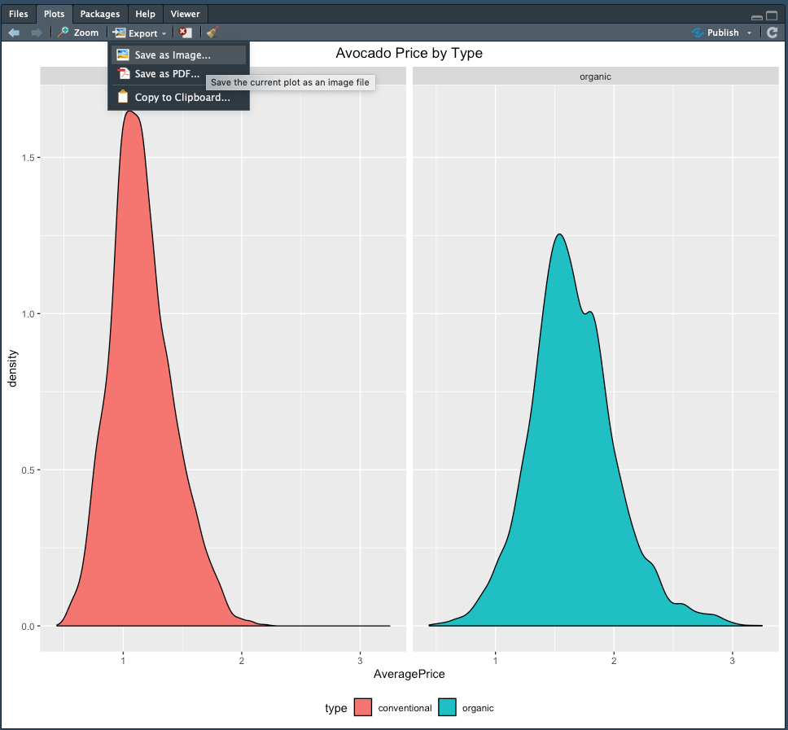
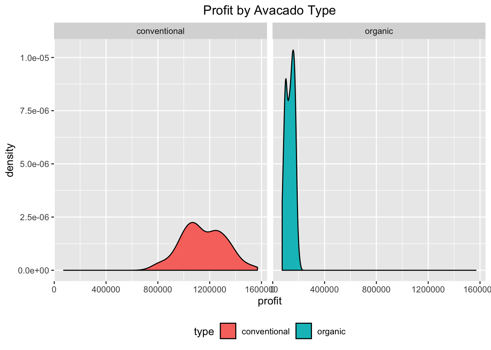

6 Avacados Tutorial
For this tutorial, we’ll pretend we work for a supermarket chain interested in avacado pricing. Understanding price changes and the drivers behind those changes can help us forecast future shifts that enable us to stay ahead of the market and create appropriate pricing given the economic environment.
Goals of this tutorial
- Introduce ggplot2 in more detail
- Install and Load Packages
- Load and interact with large dataset
- Forecast future pricing and volume of product
Datasets used
- avacado.csv
6.1 ggplot2 crash course
ggplot2 is the most popular plotting package in R. It’s regarded as one of the best visualization packages of any open-source programming language and has been refactored to work within other languages such as Python. The advantage of ggplot2 is how optimized it is to work with big data. We can create ggplots for thousands of data points in less than a second. Customization options are also endless with ggplot2. ggplot2 can create the following types of plots:
1) Correlation
- Scatterplot
- Scatterplot With Encircling
- Jitter Plot
- Counts Chart
- Bubble Plot
- Animated Bubble Plot
- Marginal Histogram / Boxplot
- Correlogram
2) Deviation
- Diverging Bars
- Diverging Lollipop Chart
- Diverging Dot Plot
- Area Chart
3) Ranking
- Ordered Bar Chart
- Lollipop Chart
- Dot Plot
- Slope Chart
- Dumbbell Plot
4) Distribution
- Histogram
- Density Plot
- Box Plot
- Dot + Box Plot
- Tufte Boxplot
- Violin Plot
- Population Pyramid
5) Composition
- Waffle Chart
- Pie Chart
- Treemap
- Bar Chart
6) Change
- Time Series Plots
- From a Data Frame
- Format to Monthly X Axis
- Format to Yearly X Axis
- From Long Data Format
- From Wide Data Format
- Stacked Area Chart
- Calendar Heat Map
- Slope Chart
- Seasonal Plot
7) Groups
- Dendrogram
- Clusters
8) Spatial
- Open Street Map
- Google Road Map
- Google Hybrid Map
Additional information on these plots can be found at the following links: * http://r-statistics.co/Top50-Ggplot2-Visualizations-MasterList-R-Code.html * https://tutorials.iq.harvard.edu/R/Rgraphics/Rgraphics.html * https://ggplot2.tidyverse.org/
All ggplot instances follow the same basic format: first calling ggplot and then a plot type. ggplot takes two arguments: the first is a dataset (a data.frame object) and the second is a call to aes(), where you assign variables in the dataset to components of the graph called aesthetics. The specific type of plot you’d like to make with it is the ggplot2 function for the general type of plot you want: for example, a barplot is called geom_bar as we saw in the last example. Let’s quickly explore these:
var1 = seq(from=1, to=30, by=1)
var2 = rnorm(n=30, mean = 10, sd = 1)
df <- data.frame(x = var1, y = var2)
head(df)## x y
## 1 1 10.431541
## 2 2 8.828900
## 3 3 9.806681
## 4 4 8.321781
## 5 5 9.324582
## 6 6 9.329287Now that we have a data frame with variables var1 and var2, we can create a ggplot. Let’s start by creating the background of our ggplot by using the first calling ggplot.

The data argument is declared as our df data.frame. Our x axis and y axis are specified by the var1 and var2 variables within the df dataframe. R understands what var1 and var2 are because it assumes the aesthetics are variables within the data dataframe. Now we can plot a ggplot2 instance using this.

The geom in geom_point stands for geometry. All geometrical plots in ggplot2 begin with geom.

Within the plot type we can specify additional arguments to enhance the plot in a way we’d like.

We can also add linear regression lines to our plots easily

We can have multiple geometry plots on one ggplot instance…
## `geom_smooth()` using method = 'loess' and formula 'y ~ x'
Histograms can be done within 1 line.
## `stat_bin()` using `bins = 30`. Pick better value with `binwidth`.
Density plots are easy too!

Now that we’ve gone through some example plots with ggplot2, let’s use ggplot2 to plot some real data!
6.2 Load the Avacados Dataset
First we’ll load in the packages and the avacados dataset.
## data.table 1.12.2 using 2 threads (see ?getDTthreads). Latest news: r-datatable.com##
## Attaching package: 'dplyr'## The following objects are masked from 'package:data.table':
##
## between, first, last## The following objects are masked from 'package:stats':
##
## filter, lag## The following objects are masked from 'package:base':
##
## intersect, setdiff, setequal, union## corrplot 0.84 loaded##
## Attaching package: 'lubridate'## The following objects are masked from 'package:data.table':
##
## hour, isoweek, mday, minute, month, quarter, second, wday, week,
## yday, year## The following object is masked from 'package:base':
##
## dateLet’s check out what the avacados dataframe (avacado_df) looks like.
## [1] "data.frame"# what about the class of the `type` variable within the avacado_df data frame?
class(avacado_df$type)## [1] "factor"6.3 Exploring the Dataset
- Is there null data ?
- What are various columns ?
- Data in days/weeks ?. How many years ?
- How many regions and what are they ?
Is there null data?
Null data is a feature of most datasets. In R, null data is classified as NA, or Not Available. If there is null data in a dataset, you’ll see an NA in the dataset. For reference, a blank cell in Microsoft Excel would be regarded as NA when read in R.
## [1] 0To find out if there are any null data points we use the is.na() function. This prints out a logical (aka True or False) for each cell. It prints FALSE if there is data and TRUE if the data is NA. In the code above, we tell R to sum() the number of times the is.na reports TRUE for the AveragePrice variable. We see that the return is 0 here, thus telling us that there are no NA data points in this dataset.
** What are the various column names**
With most things in R, there are multiple ways to answer the same question.
## [1] "X" "Date" "AveragePrice" "Total.Volume" "X4046"
## [6] "X4225" "X4770" "Total.Bags" "Small.Bags" "Large.Bags"
## [11] "XLarge.Bags" "type" "year" "region"## [1] "X" "Date" "AveragePrice" "Total.Volume" "X4046"
## [6] "X4225" "X4770" "Total.Bags" "Small.Bags" "Large.Bags"
## [11] "XLarge.Bags" "type" "year" "region"What years are in this dataset?
Use the unique function which returns a list of each character string, number, or whatever is in a vector or list.
## [1] 2015 2016 2017 2018What regions are in this dataset?
## [1] Albany Atlanta BaltimoreWashington
## [4] Boise Boston BuffaloRochester
## [7] California Charlotte Chicago
## [10] CincinnatiDayton Columbus DallasFtWorth
## [13] Denver Detroit GrandRapids
## [16] GreatLakes HarrisburgScranton HartfordSpringfield
## [19] Houston Indianapolis Jacksonville
## [22] LasVegas LosAngeles Louisville
## [25] MiamiFtLauderdale Midsouth Nashville
## [28] NewOrleansMobile NewYork Northeast
## [31] NorthernNewEngland Orlando Philadelphia
## [34] PhoenixTucson Pittsburgh Plains
## [37] Portland RaleighGreensboro RichmondNorfolk
## [40] Roanoke Sacramento SanDiego
## [43] SanFrancisco Seattle SouthCarolina
## [46] SouthCentral Southeast Spokane
## [49] StLouis Syracuse Tampa
## [52] TotalUS West WestTexNewMexico
## 54 Levels: Albany Atlanta BaltimoreWashington Boise Boston ... WestTexNewMexicoHow many regions are in this dataset?
## [1] 54** What types of avacados are in this dataset **
# Remember, we can query information about a variable using avacado_df$type or avacado_df['type']
unique(avacado_df['type'])## type
## 1 conventional
## 9127 organicThere are 2 types of Avacados in this dataset - conventional and organic. Let’s use ggplot2 to plot a density plot of the avacados based on the type.

Let’s expand this a little further and create 2 geom_density plots within 1 window.
In this plot, we declare our ggplot instance, set the type of plot as a geom_density plot, and then use a facet_wrap that wraps a 1d sequence of panels into 2d. This is a fancy way of saying we want to place 2 plots into 1 window and share the y axis.
Let’s expand on this plot a little further by adding the following adjustments to theme and labs. theme is the ggplot2 theme you use for your ggplot. labs is the label function. With these two functions, we can declare changes to the x and y labels, title, legend position, etc.
ggplot(avacado_df, aes(x=AveragePrice, fill=type)) + geom_density() + facet_wrap(~type) +
theme(plot.title=element_text(hjust=0.5), legend.position="bottom") + labs(title="Avocado Price by Type")
Great job! Now let’s save this image to share with our team later on! We can do this by navigating to the Plot window (bottom right quadrant), selecting Export and Save As Image.

6.4 Expanding the dataset
Before we expand on this dataset, let’s get rid of unnecessary columns that aren’t useful to us. We do this by declaring the variable equal to NULL
avacado_df$X = NULL
avacado_df$X4046 = NULL
avacado_df$X4225 = NULL
avacado_df$X4770 = NULL
avacado_df$XLarge.Bags = NULL** Calculating Revenue and Profit **
Revenue = TotalVolume * AveragePrice
Profit - Assume that conventional fetches 15% profit of revenue while organic fetchs 45% of revenue
Let’s calculate the revenue and add it to our dataframe
# we simply multiply the two columns together
av_revenue = avacado_df$Total.Volume * avacado_df$AveragePrice
# to add our av_revenue vector to the dataframe, add it in like so
avacado_df['revenue'] = av_revenueNow let’s add a blank profit column and populate it based on our conditions above.
# add the blank column - remember we can use = or <- for object/variable declaration
avacado_df$profit <- NANow, we need to create 1 profit variable that encompasses 2 conditions. The first is that the conventional avacado has a 15% profit, while the organic avacado has a 45% profit.
## [1] conventional
## Levels: conventional organic## use the logical operator to test that avacado_df$type[1] is equal to 'conventional'
avacado_df$type[1] == 'conventional'## [1] TRUEWe see that our test value (row 1 of the avacado_df$type[1]) is conventional and our logical test shows this. Now let’s apply this method above to the profit variable we want to add to the dataset. We’ll do so using the ifelse() function.
# let's use our "is equal to"
avacado_df$profit = ifelse(test = avacado_df$type == 'conventional', yes = avacado_df$revenue * 0.15, no = avacado_df$revenue * 0.45)ifelse() takes 3 arguments - test, yes and no. Our test is whether the avacado_df$type is conventional. If it is indeed conventional we multiply our revenue by 0.15 to calculate the profit. Conversely if it is not conventional, then it must be organic and thus we multiply our revenue by 0.45 to calculate the profit. This is the beauty of R in motion. The ifelse() function is automatically rolling through every row and running the same test. Notice how fast this runs. Keep in mind that this dataset is ~18,000 rows long.
** Let’s take a look at our updated dataframe **
It looks great! Let’s save all of our hard work as a new, separate csv file. We do this using the write.csv() function.
6.5 Avacado Assignment
Complete the following coding problems and submit the resulting plots and CSV file.
The profit for California avacados is 20% higher for both conventional and organic avacados. Make an adjustment to the
profitvariable of the dataframe that reflects the situation where if a rows region isCalifornia, the profit is 10% higher for those rows. Save this updated CSV.Create a
geom_density() ggplotof the California types of avacados vs. profit. Save this image.
HINT: In order to plot successfully, you’ll have to create a subset of the california dataset like this Albany region example
albany = avacado_df[avacado_df$region == 'Albany',]
Your final products should look like this…
